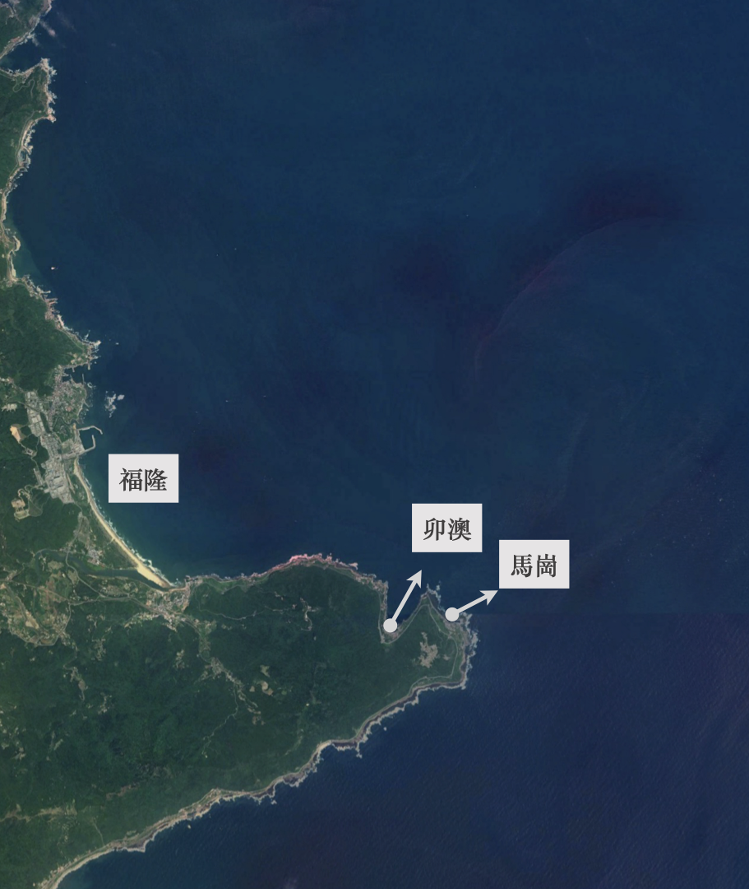
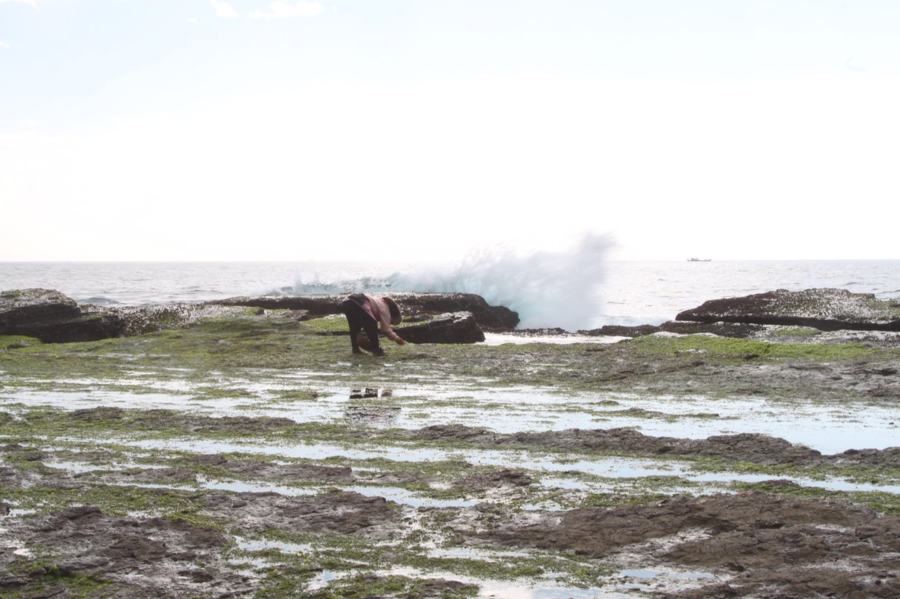
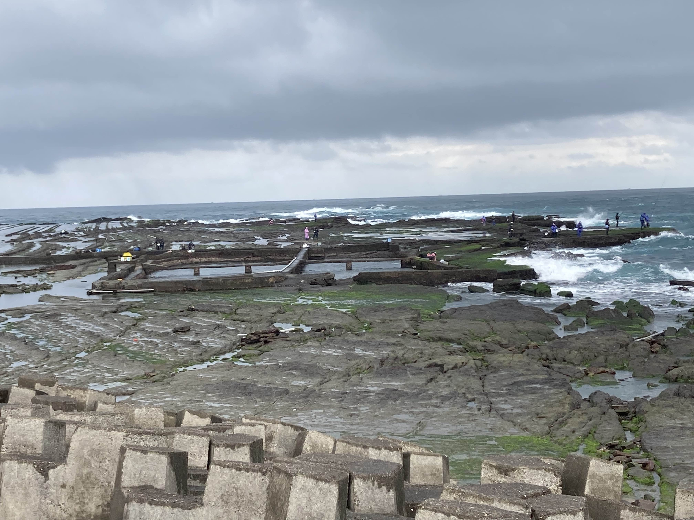

東北角村莊的下一步？
極東漁村的過去與未來
馬崗村、或稱馬崗街，臺灣最東邊的漁村。位於新北市貢寮區，村莊就位於三貂角燈塔的下方。
馬崗現住人口僅有96人，高齡人口比例達到19.5%，如同許許多多的偏鄉社區，這裏屬於典型的高齡化社區。

從台北出發，要先搭一個多小時的區間車到福隆火車站，再等一個小時僅一班的臺灣好行856號公車，乘至終點站。開車的話，要延著台二線一路蜿蜒前行，與砂石車呼嘯而過，仔細一看方能找到這個座落在台二線一旁的小村落。
比鄰著觀光勝地福隆，有飯店、腳踏車道、福隆便當，以及夏天舉行的音樂祭，馬崗村格外清幽。
此外，馬崗村北邊有廣大的海蝕平台，不僅僅吸引了一些釣客前來海釣，這塊不起眼的海蝕平台也是居民重要的生活命脈。這裡的居民多以捕魚、養殖漁業、採集石花菜和紫菜等海邊藻類維生，成為東北角獨特的海岸地景。


依據一份2021年民間所做的馬崗調查報告《傳承：漁村文化資產與嚮海之人的浪漫共存》中可知，臺灣東北角自清朝統治時期即有漢人移居於此，馬崗居民的生產活動最早可追溯至日治時期。
這裡還有一個奇特的「石頭屋」地景。這裡保留了許多百年歷史的石頭屋，根據當地耆老回憶，石頭屋就地取用沿岸或附近的石頭，有錢人家會再由打石師傅構築而成。

看似平靜的村落，於2018年中始，掀起了一陣風波——